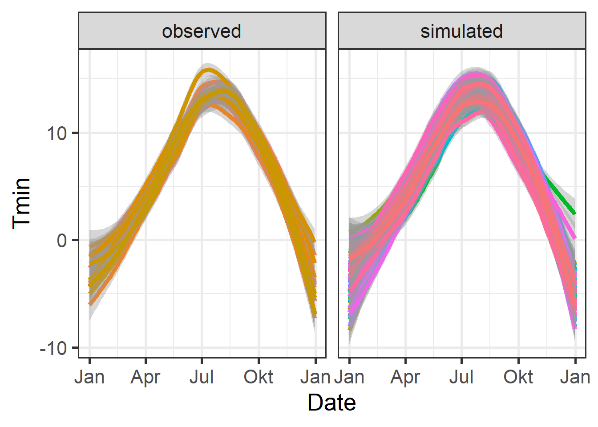
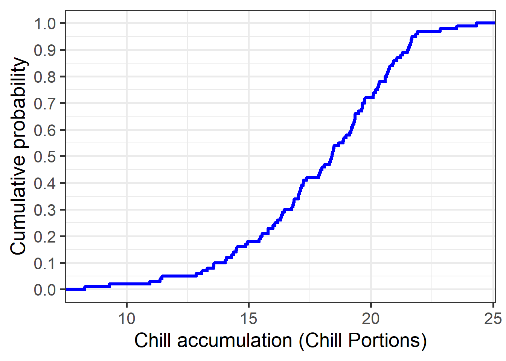

Chapter 25 — Why PLS doesn’t always work
This chapter examines why PLS regression can fail, showing how overlapping temperature signals and model sensitivities can blur chill and heat responses.
Sensitivity analysis of chill and heat models
Produce chill and heat model sensitivity plots for the location you focused on in previous exercises.
Site definition and temperature ranges
library(chillR)
library(tidyverse)
library(ggplot2)
library(colorRamps)
latitude <- 47.7
month_range <- c(10, 11, 12, 1, 2, 3)
Tmins <- -20:20
Tmaxs <- -15:30
temp_model <- Dynamic_Model Chill model sensitivity calculations
mins <- NA
maxs <- NA
CP <- NA
month <- NA
for (mon in month_range) {
days_month <- as.numeric(
difftime(
ISOdate(2002, mon + 1, 1),
ISOdate(2002, mon, 1)
)
)
if (mon == 12) days_month <- 31
weather <- make_all_day_table(
data.frame(
Year = c(2001, 2001),
Month = c(mon, mon),
Day = c(1, days_month),
Tmin = 0,
Tmax = 0
)
)
for (tmin in Tmins)
for (tmax in Tmaxs)
if (tmax >= tmin) {
hourtemps <- weather %>%
mutate(Tmin = tmin,
Tmax = tmax) %>%
stack_hourly_temps(latitude = latitude) %>%
pluck("hourtemps", "Temp")
CP <- c(
CP,
tail(Dynamic_Model(hourtemps), 1) / days_month
)
mins <- c(mins, tmin)
maxs <- c(maxs, tmax)
month <- c(month, mon)
}
}
results <- data.frame(
Month = month,
Tmin = mins,
Tmax = maxs,
CP = CP
)
results <- results[!is.na(results$Month), ]
write.csv(
results,
"data_Güttingen/Model_sensitivity_Guettingen_CP.csv",
row.names = FALSE
)Sensitivity heat maps across winter months
results$Month_names <- factor(
results$Month,
levels = month_range,
labels = month.name[month_range]
)
DM_sensitivity <- ggplot(
results,
aes(Tmin, Tmax, fill = CP)
) +
geom_tile() +
scale_fill_gradientn(
colours = alpha(matlab.like(15), 0.6),
name = "Chill per day\n(Chill Portions)"
) +
facet_wrap(vars(Month_names)) +
xlab("Tmin (°C)") +
ylab("Tmax (°C)") +
theme_bw(base_size = 15)
DM_sensitivity
Comparison with observed temperature conditions
G_temps <- read_tab("data_Güttingen/Güttingen_clean_weather.csv") %>%
filter(Month %in% month_range) %>%
mutate(
Month_names = factor(
Month,
levels = month_range,
labels = month.name[month_range]
)
)
G_temps[G_temps$Tmax < G_temps$Tmin, c("Tmax","Tmin")] <- NA
DM_sensitivity +
geom_point(
data = G_temps,
aes(Tmin, Tmax),
inherit.aes = FALSE,
size = 0.25,
color = "black"
) +
ggtitle("Chill model sensitivity – Güttingen") +
theme(
strip.background = element_blank(),
strip.text = element_text(face = "bold")
)
Compare Chill vs Heat
Model_sensitivities_Guettingen <- read.csv(
"data_Güttingen/Model_sensitivity_Guettingen_CP.csv"
)
Chill_sensitivity_temps <- function(
chill_model_sensitivity_table,
temperatures,
temp_model,
month_range = c(10, 11, 12, 1, 2, 3),
legend_label = "Chill/day"
) {
library(ggplot2)
library(colorRamps)
cmst <- chill_model_sensitivity_table
cmst <- cmst[cmst$Month %in% month_range, ]
cmst$Month_names <- factor(
cmst$Month,
levels = month_range,
labels = month.name[month_range]
)
p <- ggplot(
cmst,
aes(x = Tmin, y = Tmax, fill = .data[[temp_model]])
) +
geom_tile() +
facet_wrap(~Month_names) +
scale_fill_gradientn(
colours = alpha(matlab.like(15), 0.6),
name = legend_label
) +
theme_bw(base_size = 14) +
labs(x = "Tmin (°C)", y = "Tmax (°C)")
temperatures <- temperatures[temperatures$Month %in% month_range, ]
p +
geom_point(
data = temperatures,
aes(x = Tmin, y = Tmax),
inherit.aes = FALSE,
size = 0.3,
colour = "black"
)
}
G_temps <- read_tab("data_Güttingen/Güttingen_clean_weather.csv")
Chill_sensitivity_temps(
Model_sensitivities_Guettingen,
G_temps,
temp_model = "CP",
month_range = c(10, 11, 12, 1, 2, 3),
legend_label = "Chill per day\n(Chill Portions)"
) +
ggtitle("Chill model sensitivity at Güttingen")